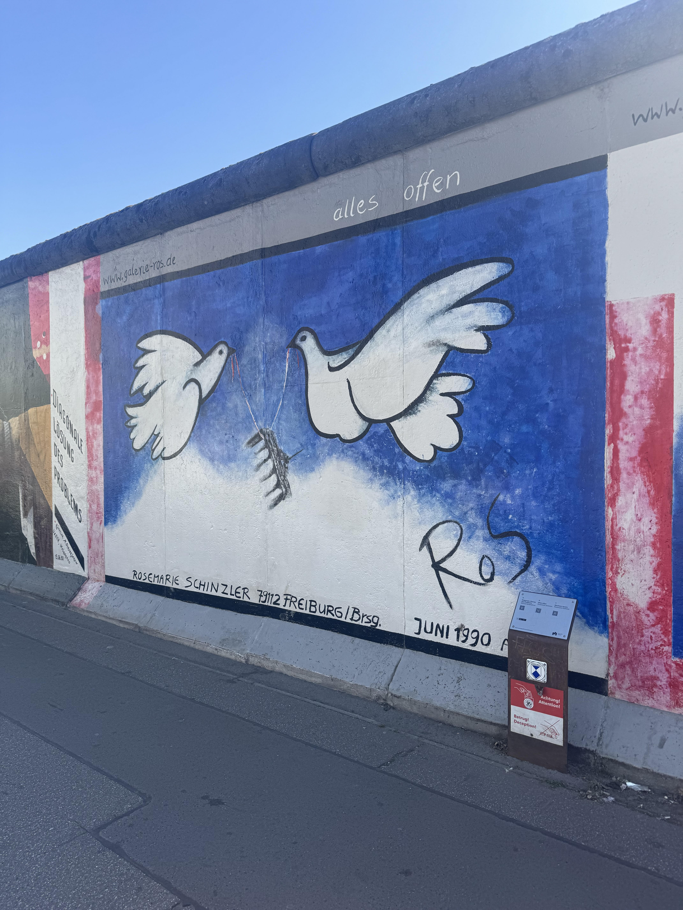
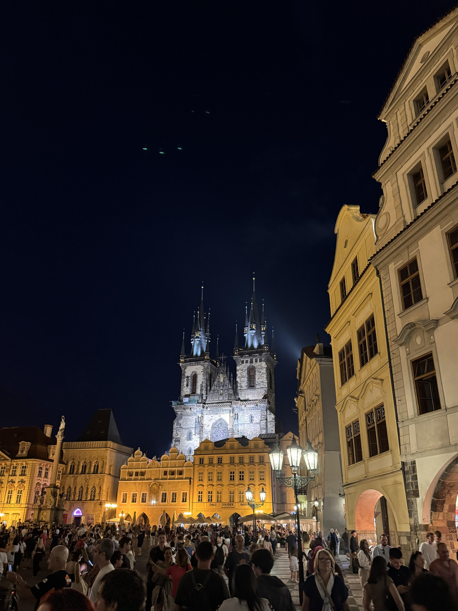
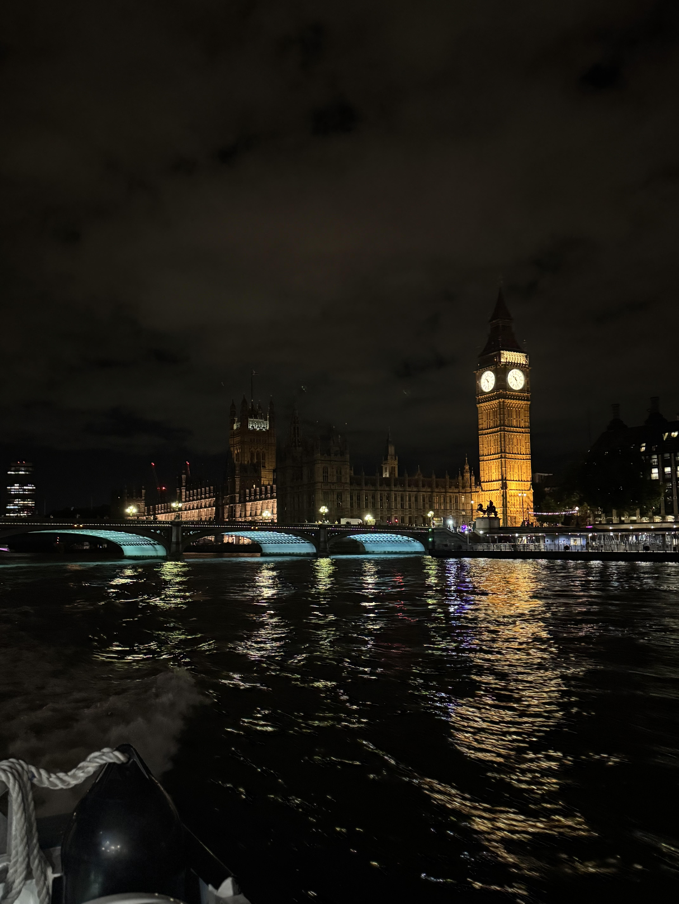

An interest of mine is traveling. This past summer, I was fortunate enough to have the incredible opportunity to study abroad in Berlin, Germany, through CIEE. In a city renowned for its contributions to renewable energy and commitment to innovation, I gained a wealth of knowledge about sustainable engineering practices. For example, Berlin’s intricate subway system, known as the U-Bahn, demonstrates how the entire city is organized around public transportation rather than cars. As I explored more stations, I learned about discreet doors and stairways leading to underground bunkers built during WWII. I was able to tour one of these underground bunkers, but I was not allowed to take photos. However, you can still find many pictures of these bunkers on the Berliner Unterwelten website.
Outside of the classroom, I visited the many famous landmarks of Berlin. The Brandenburg Gate, the Berlin Wall, the Berlin TV Tower, Checkpoint Charlie, and the Reichstag were all fun to see. I also enjoyed drinking a glass of beer at one of the city’s many beer gardens in Tempelhofer Feld. It wouldn’t be a proper visit without experiencing Berlin nightlife. One of my favorite experiences was the Berlin Icebar. A 19th-century Bremerhaven tavern-themed bar where you’re surrounded by ice. Even your shot glasses are made of ice. Finally, some dancing at the House of Weekend club was a great way to end the night.

During my stay in Berlin, I decided to take a quick weekend trip to Prague, the Czech Republic. I took a 5-hour FlixBus across the German countryside, where I saw large patches of forest, open grass, and wind turbines. As I crossed into the Czech Republic, the scenery shifted from forests to grassy hills where wild horses roamed. Eventually, I reached Prague, where I was greeted by scenes of the Prague Castle in the distance as I crossed over the Vltava River on one of Prague’s many bridges connecting the various districts. Having been on a bus for 5 hours, I was starving. I went to a nice restaurant and enjoyed a plate of Vepřo Knedlo Zelo. A combination of roasted pork (vepřo), sliced dumplings (knedlo), and braised sauerkraut (zelo), all served together with rich gravy. Afterwards, I had a Trdelnik ice cream for dessert.
Walking the streets of Prague gave me a chance to admire the colorful baroque buildings and gothic churches. Upon reaching the Old Town Square, I had the chance to take pictures of the medieval Astronomical Clock, which gives an animated hourly show. On my way to Prague Castle, I crossed the Charles Bridge, lined with statues of Catholic saints. Reaching the Prague castle I took a tour of the grounds and learned about its history as the seat of power for kings of Bohemia, Holy Roman emperors, and presidents of Czechoslovakia. Finally, I visited “My People Bar” to try the unique drinking experience of wearing a soldier's helmet and taking a shot while getting hit in the head with a bat!

The final stop on my Europe trip was London. While in London, I visited iconic landmarks like Big Ben, the London Eye, Buckingham Palace, and Westminster Abbey. At Westminster Abbey, I enjoyed the Sunday organ recitals played by Jean-Willy Kunz. Afterwards, I explored Chinatown to try out all the delicious food and snacks found there. Then, I found myself at the Black Dog Pub for some fish and chips before ending my day with a panoramic view of the city from the top of The Shard. The next day, I had a full English breakfast before heading over to the British Museum.
Some notable exhibits I saw include:
Later, I walked around Piccadilly Circus and Soho, where I had some pizza and a doner kebab. I also did some shopping in Camden Market while paying some quick visits to Abbey Road and Station 9 3/4. Finally, my favorite part of my London visit was taking a nighttime boat tour of the city on the River Thames. Seeing the vibrant mix of illuminated landmarks and passing under Tower Bridge made for some great views. I hope to visit many more countries and cities in the near future!